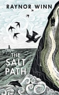

“The Salt Path is an unflinchingly honest, inspiring and life-affirming true story,” reads the description of Raynor Winn’s bestselling memoir on its publisher Penguin Random House’s website.
Which is unfortunate wording if accusations made at the weekend turn out to be true: an investigation by the Observer alleged that the 2018 book – which has recently been adapted into a film starring Gillian Anderson and Jason Isaacs – is not all that it seems. Winn writes in The Salt Path that she and her husband, Moth, had their home repossessed due to an investment in a friend’s company that went on to fail. With nowhere to live, as she tells it, the couple decided to walk the length of the South West Coast Path, wild camping along the way and relying on the kindness of strangers. The Observer piece suggests Winn’s account of becoming homeless is untruthful, and reports that she took £64,000 from her former employer. It also questions the legitimacy of Moth’s diagnosis with the neurological condition corticobasal degeneration (CBD), a core part of the memoir.
Winn’s immediate response called the article “highly misleading”, adding: “We are taking legal advice and won’t be making any further comment at this time.” She stood by her book being “the true story of our journey”. Still, after the report, PSPA, a charity that supports people with CBD and formerly worked with Winn and her husband, terminated its relationship with the couple.
On Wednesday, Winn published a more detailed statement , defending her book’s truthfulness and giving more detail about the events that led to the couple losing their home. She also provided medical letters addressed to her husband in defence of allegations relating to his illness.
This is not the first time a much-hyped memoir has come up against accusations of lying. Belgium-born Misha Defonseca’s 1997 book about how she was raised by wolves during the second world war turned out to be completely fabricated. Love and Consequences by Margaret B Jones , which was sold on release in 2008 as the true story of the author’s experience growing up as a mixed-race foster child in South Central Los Angeles, turned out to have been written by Margaret Seltzer, a white, privately educated woman who grew up with her biological family.
James Frey at the Union Chapel, London, in 2011.Photograph: David Levene/The Guardian
Perhaps the most famous instance is James Frey’s A Million Little Pieces , a 2003 memoir of drug addiction and alcoholism that, after being championed by Oprah Winfrey in 2005, shot to the top of the New York Times bestseller list and remained there for 15 weeks. It was billed as “brutally honest”, but later it came to light that chunks of the book had been made up. Winfrey in particular was furious with Frey, telling him it was difficult to talk to him when he came on her TV show to explain himself in 2006. “I feel duped,” she said. “But more importantly, I feel that you betrayed millions of readers.”
“How could they lie?” is a question many readers ask when a memoir they love is proved to be untrue. But there’s another question that needs to be answered, too: how could the author get away with it ? How did they manage to get their lies past an agent and multiple editors, all the way into a published book labelled as a true story?
The short answer is that if someone is lying about their own life, it is often very difficult for others to tell. Dr Pragya Agarwal, the author of books including the 2021 memoir (M)otherhood and a teacher of memoir writing, says that a big part of writing nonfiction “is about trust between the writer and the reader. I am not really sure how someone’s life story can be factchecked in its entirety.”
Others say it is not the publisher’s role to investigate whether an author is telling the truth or not. Grace Pengelly is a freelance writer and editor who formerly worked as a nonfiction commissioning editor at HarperCollins. An editor’s role “is to help the author craft their story as compellingly and accurately as possible”, she says, and that requires believing in the writer. “Without a certain degree of trust from the outset, it is difficult for an editor and author to work with each other effectively.”
That doesn’t mean that memoirs are not fact-checked. “Prior to acquiring a memoir, a publisher would look into the background of the author and their story to see if it checks out,” says Pengelly. Any “question marks around the veracity of an author’s story would definitely be a reason why a publisher wouldn’t offer on a book”. But the research undertaken at this stage wouldn’t tend to involve checking whether someone was actually incarcerated for as long as they said they were (one of the major falsities in A Million Little Pieces), or whether a couple who claimed to be homeless actually owned a property in the south of France, as was alleged by the Observer regarding Winn and her husband (a property Winn has since described as an “uninhabitable ruin”).
Raynor and Moth Winn.Photograph: Jim Wileman/The Guardian
Finding out that kind of information might be possible only if publishers had specific teams dedicated to it. The publishing consultant and editor Katy Loftus, who previously worked for Penguin Random House, says she isn’t aware of any publishing houses with a factchecking department. “Other than top executive salaries, publishing is run on a shoestring. Books make much less money than people think,” she says. The big publishers have legal departments, “who will give an opinion on something flagged up to them by a commissioning editor, and occasionally do a complete legal read if requested”, she adds. But the main factchecking responsibility tends to fall to the commissioning editors, who are “responsible for hundreds of tasks” – from briefing book cover designers, to negotiating deals with authors, to managing teams of people. The editing itself “is often at the bottom of the list, and factchecking is only part of the editing process.”
Even when it comes to legal checks, the main concern is that a book doesn’t contain anything that might lead to the publisher being sued, rather than actually analysing the factual content, says Ian Bloom, a media lawyer who has worked in publishing. “To some extent, nobody much cares if they’ve got dates wrong and facts wrong, as long as there’s no legal implications.”
Bloom suspects that a number of celebrity memoirs in particular contain omissions or embellishments. “There’s no real harm done if they gloss over certain things in their lives,” he says, as long as it’s not defamatory to anyone else.
Aside from rare exceptions – such as when a group of readers successfully sued Frey’s publisher , claiming they were defrauded as they bought his book under the impression that it was true, and were refunded the cover price – publishers do not face serious material repercussions for lies told in memoirs. Reputational damage, meanwhile, is usually put on the author. “When an author signs a contract with a publisher, there are usually author covenants that include clauses about the truthfulness and integrity of the material to the best of the author’s knowledge and belief,” Bloom says. The publisher is then entitled to cancel that author’s contract, should a book’s veracity be called into question.
Of course, authors can get around this by writing “autobiographical fiction” rather than memoir: books such as the actor Carrie Fisher’s Postcards From the Edge, based on her own life but categorised as a novel, or the Booker-winning autofictional novel Shuggie Bain by Douglas Stuart, don’t come under fire for being made up, because we all know that’s what fiction is. So why didn’t authors like Frey turn their stories into novels? Perhaps the books wouldn’t have done as well marketed in that way – in a true-crime-obsessed world, we’re all familiar with the strength of desire for real stories. “Autofiction isn’t as well-established a genre as memoir,” Pengelly says. “So marketing teams face discrete challenges in framing and taking these stories to the public. A ‘true story’ has historically proved easier to build a campaign around.”
Once a book is out in the world, any inaccuracies tend to be spotted by journalists or academics – there is no regulator of the publishing industry equivalent to the Independent Press Standards Organisation and Ofcom for the media in the UK. With approximately 200,000 books published annually in the UK alone, “There’s no regulator on Earth who can read them all … it’s impossible,” Bloom says.
So how do we stop fake memoirs from being published? In light of the Salt Path allegations, Pengelly is sure publishers will be considering ways to avoid such a scenario coming up again. “If a narrative arc seems too neat and tidy to be true, perhaps it’s worth considering why, and employing a freelance factchecker to investigate,” she says.
Winn on her travels in south-west England.
The trouble is, neat and tidy narrative arcs are often exactly what many readers – and viewers of film adaptations – want. A memoir Pengelly worked on, Zig-Zag Boy by Tanya Frank , is about a mother coming to terms with her son’s experiences of psychosis. That book was a more modest commercial success than The Salt Path, but could it have been more of a hit if Frank had ended it with her son being “healed”, rather than with her accepting his altered state? Quite possibly. Triumph in the face of medical adversity is a seductive concept, as readers of Winn’s books will know from their stories of Moth’s ability to overcome the symptoms of his illness and undertake long walks.
Nic Wilson , whose memoir Land Beneath the Waves is about how the natural world helped her to navigate and accept her chronic illness, is disparaging of the “nature cure” trope we often see in popular books about health. It creates an unrealistic expectation that the order of events should be “diagnosis, illness, recovery. And I think readers come to expect that,” she says.
Clearly, authors may have something to gain by bowing to such expectations and embellishing or omitting certain facts of their life stories. But they also have the most to lose if lies in their books are exposed: they could have their publishing deal dropped, which might mean having to pay back their advance, and they risk no publisher wanting to be associated with them again.
Frey’s publisher, Nan Talese, was particularly aggrieved by the way her author’s reputation was attacked. Winfrey displayed “fiercely bad manners – you don’t stone someone in public, which is just what she did”, she told the Dallas Morning News at the time.
“Scandal has stalked memoir since the genre was invented,” Loftus says – an early example being the 1836 memoir Awful Disclosures of Maria Monk, a 20-year-old woman’s story of life in a Montreal convent, which was vilified as a hoax. “In practice the publicity rarely does more harm than good to the publisher, whereas an author’s life can be left in tatters.”
That’s not to say that they won’t continue to make money: A Million Little Pieces kept selling even in its second iteration, which had passages rewritten and contained a “note to the reader” addressing its inaccuracies. And whatever happens after the allegations made against Winn, having already sold more than 2m copies of The Salt Path, she has been made rich by this book and its sequels, and will continue to receive royalties for as long as people keep buying them.
The fact that there is money to be made – with very few legal repercussions – by telling the most marketable version of a story, rather than the true one, makes it difficult to believe that this controversy will be the last of its kind. After all, no memoir can be completely true. “Memories are fallible and selective; we always remember half-truths, and the story an author chooses to tell is only ever one story of a particular situation,” Agarwal says. “But what any reader wants to believe is that the story they have put their faith in is closest to the writer’s truth, that they have not been deliberately misled, that they have not been manipulated. This is essential.”